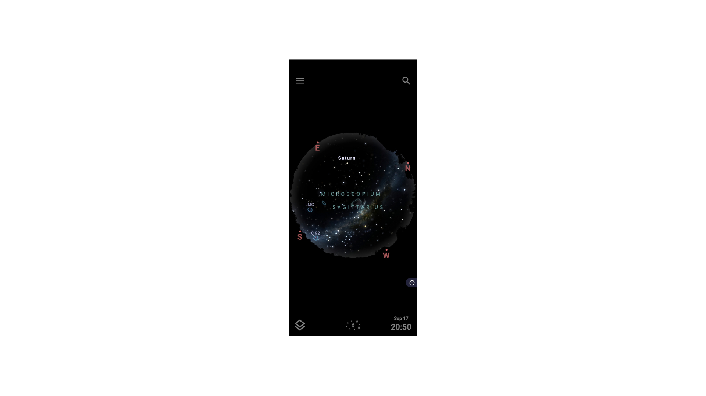

For starters, all you need is a healthy pair of eyes and a phone with a decent camera. You can learn constellations, track satellites, enjoy meteor showers, and take photos of the Milky Way galaxy. Telescopes will give you the premium side of stargazing. You can zoom into the planets and see the surface's colour and texture. There are 3 main types of Telescopes: Refractor, Reflector, and Catadioptric. Refractor is best for the Moon, planets, and double stars. It takes sharp images while the maintenance is also low. The Reflector is best for looking at galaxies. You get a decent size while the cost is still not that much. Finally, Catadioptric is best for all-purpose viewing, meaning you can almost use it to look for anything. It is a very compact telescope, but it is heavier than others and more expensive.
When it comes to stargazing, I highly recommend downloading an app called Stellarium. This is a free app that is very useful when stargazing. It gives a map, and you can see where the specific objects in the sky that you are looking for are.
